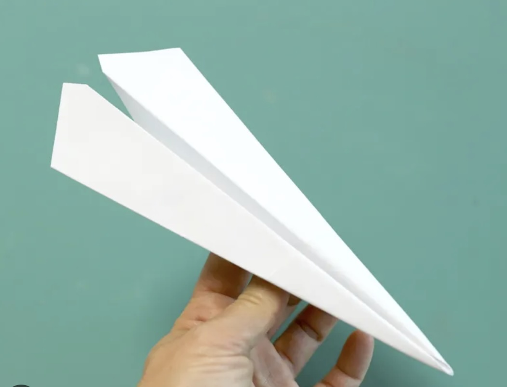

One piece of paper.
1. Fold the paper in half.
2. Open the paper and fold the top two corners to the center line.
3. Fold the top edges to the center again.
4. Fold the whole paper in half.
5. Fold both sides down to make the wings.
6. Hold the airplane in the middle and throw it!
